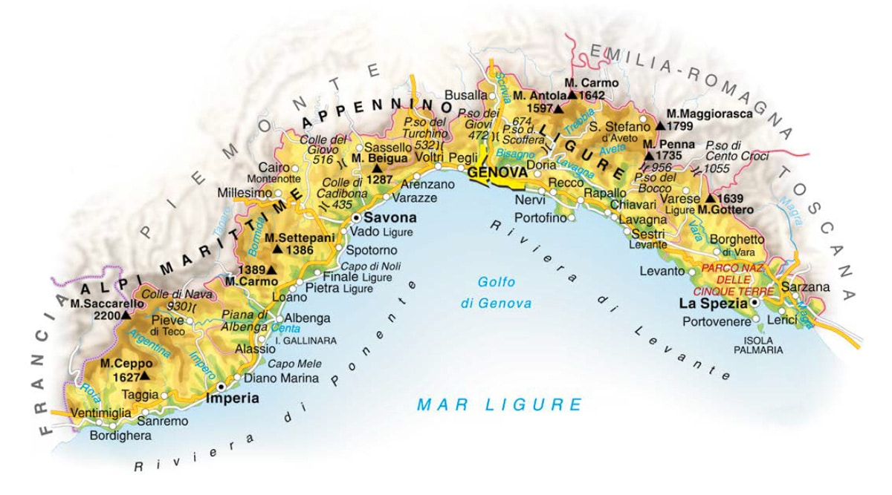
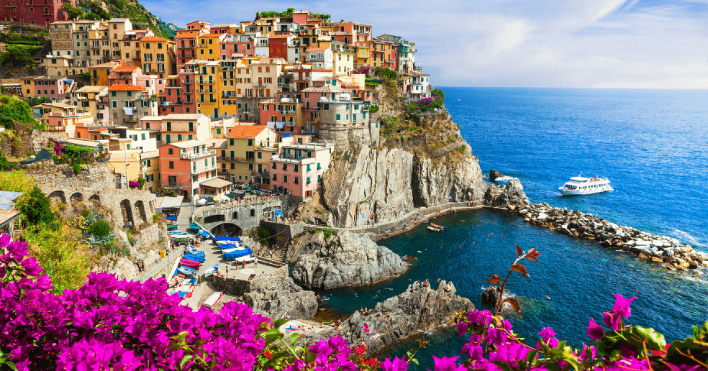

| Nome |
Liguria |
| Capoluogo |
Città Metropolitana di Genova (GE) |
| Data di Istituzione |
1948 |
| Altitudine media |
250 m.s.l.m |
| Superficie |
5.418 km^2 |
| Abitanti (agosto 2023) |
1.501.005 |
| Densità |
277 ab/km^2 |
| Comuni |
234 |
| Province |
Imperia (IM), La Spezia (SP), Savona (SV) |
| Confini |
Emilia-Romagna, Piemonte, Toscana, Francia, Principato di Seborga (Non riconosciuto ufficialmente) |
| Patrono |
S.Giovanni Battista |
| PIL procapite (2017) |
31.600€ |
Posto da visitare assolutamente: Cinque Terre - Provincia di La Spezia (SP)
Le Cinque Terre sono un affascinante tratto di costa situato
nella regione della Liguria, in Italia.
Questa regione costiera è caratterizzata da paesaggi pittoreschi,
borghi colorati arroccati sulle colline, sentieri panoramici
e un mare cristallino.
Le Cinque Terre sono costituite da cinque principali località costiere,
o "terre," che vanno da nord a sud lungo la costa:
Monterosso al Mare:
Situato all'estremità nord delle Cinque Terre,
Monterosso al Mare è il più grande dei cinque paesi.
La località è divisa in due parti: la parte storica e la parte moderna.
Qui troverai spiagge sabbiose, una passeggiata lungomare
e una chiesa medievale di San Giovanni Battista.
Vernazza:
Vernazza è uno dei villaggi più pittoreschi delle Cinque Terre,
con un piccolo porto naturale, case colorate e una torre medievale.
Il suo centro storico è caratterizzato da vicoli stretti e
dalla piazza principale affacciata sul mare.
La chiesa di Santa Margherita d'Antiochia è uno degli edifici
più emblematici di Vernazza.
Corniglia:
Corniglia è unico tra i cinque villaggi perché è situato su una collina
e non direttamente sulla costa. Per raggiungere Corniglia,
è necessario salire una lunga scalinata o prendere un breve autobus.
Il paese è circondato da terrazzamenti coltivati a vigneto.
Manarola:
Manarola è celebre per i suoi colorati edifici affacciati sul
mare e per il suo pittoresco porticciolo.
Il paese è noto anche per la passeggiata dell'amore,
o "Via dell'Amore," un sentiero panoramico che collega Manarola a Riomaggiore.
Riomaggiore:
Riomaggiore è l'ultimo villaggio delle Cinque Terre procedendo da
nord a sud. Ha un'atmosfera vivace e il suo porto è circondato da case colorate.
Il Castello di Riomaggiore, situato sulla collina,
offre una vista panoramica sulla città e sul mare.
Oltre ai cinque villaggi principali, le Cinque Terre sono famose per
i loro sentieri costieri che offrono panorami mozzafiato sul mare e
sulle scogliere.
Il più famoso di questi sentieri è il Sentiero Azzurro
(Sentiero n. 2), che collega tutti e cinque i villaggi.
Le Cinque Terre sono anche famose per la produzione di vino,
in particolare il vino bianco sciacchetrà, coltivato su terrazzamenti
nelle colline circostanti. La regione è stata dichiarata
Patrimonio dell'Umanità dall'UNESCO e attira visitatori da
tutto il mondo per la sua bellezza naturale, la sua cultura e la sua cucina.
